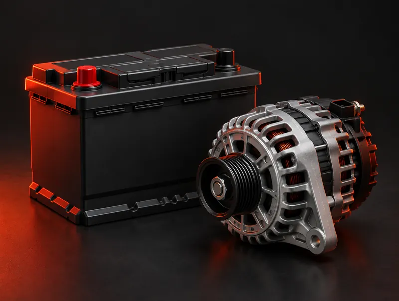
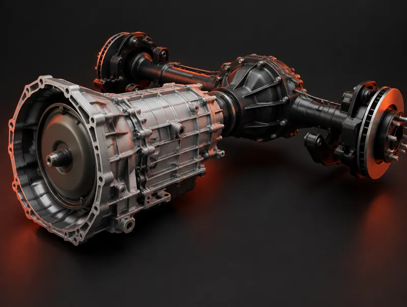

State inspections & emissions testing

We offer state inspection and emissions services. Our inspection services include cars, trucks, trailers, and motorcycles. Call to confirm the inspection your vehicle needs and arrange a visit.
Home / Services
Inspection, maintenance, and repair services for your vehicle, minor or major. Services in the main groups are listed offerings. Items under Also ask us about are not confirmed, so call 610-650-0316 before you plan around them.
We offer state inspection and emissions services. Our inspection services include cars, trucks, trailers, and motorcycles. Call to confirm the inspection your vehicle needs and arrange a visit.

Stay on top of vehicle maintenance with oil changes, cabin air filters, fuel filters, accessory belts, and wiper blade replacement. Fuel filters are the fuel service listed here; for other fuel-system work, see Fuel system & gas tank service under Also ask us about. Contact us to discuss the maintenance appropriate for your vehicle.

If your vehicle is not running as expected, contact us about engine analysis and tune-up services. We also offer fuel-injector cleaning as part of our service range. Other engine repairs are not listed here; call to confirm, or see Cylinder head & block repair, Spark plugs, and Fuel system service under Also ask us about.

Battery service is part of our maintenance and repair offerings. Call to discuss starting concerns or your vehicle's battery needs.

We offer transmission maintenance and service for rear-axle bearings and seals. Differentials and other drivetrain repairs are not listed here; see Differential repair under Also ask us about. Contact us to discuss the work appropriate for your vehicle.

We provide brake and rotor services. If you have concerns about braking performance or notice unusual noises, contact the shop to discuss an inspection and repair options.

We offer tires, tire repairs, and wheel alignments. Wheel (rim) work, tire retreads, and tire rotation and balancing are not listed here; see Also ask us about. Contact us for help with tire concerns or to discuss alignment service.

Our service range includes steering and suspension components, shock absorbers, and struts. Ball joints are not named separately; see Ball joints under Also ask us about. Contact us if you have concerns about your vehicle's handling or ride.

We offer automotive A/C service and cooling-system service. Heater service is not listed here; see Heater service & repair under Also ask us about. Call to discuss cabin cooling problems or concerns about your vehicle's cooling system.

Keep your business vehicles on your maintenance radar. Diverse Autoworks offers fleet repairs; call to discuss your vehicles, repair needs, and scheduling.
Diverse Autoworks also offers notary services Monday through Friday, 8 a.m.–3 p.m. Contact the shop before your visit to confirm availability and requirements.
Some customers ask whether Diverse Autoworks can help with vehicle tag and title paperwork alongside their notary visit. Call to ask whether your transaction can be handled, and what to bring.
If you drive an electric or hybrid vehicle, call with the year, make, and model to ask which services the shop can handle. Availability depends on the vehicle and the work. This is not a manufacturer certification or a brand-specialist claim.
Tire rotation and balancing come up often in customer conversations. Call to confirm current availability and pricing before you schedule, and tell us about any vibration or uneven wear you have noticed.
If your vehicle is slow to start, will not start, or the battery light is on, call to ask whether the shop can handle alternator or starter work for your vehicle. Availability is confirmed vehicle by vehicle.
If you cannot bring your vehicle in during the day, call to ask what drop-off, pickup, or after-hours arrangements are possible for your visit. Arrangements are confirmed with the shop for each visit.
If your vehicle cannot be driven, call to ask whether the shop can arrange or accept a tow for your visit. We do not list this as a confirmed service on this site.
Thinking about buying a used vehicle? Call to ask whether the shop can inspect it before you buy, and what the inspection would cover. We do not list this as a confirmed service on this site.
Engine work beyond analysis and tune-ups, such as cylinder head and engine block repair, is not listed on this site. Call with your vehicle details to ask whether the shop can take it on. We do not list this as a confirmed service on this site.
Fuel filters and fuel-injector cleaning are listed on this site. For other fuel-system service or repair, including gas tanks, call to ask what the shop can handle for your vehicle. We do not list this as a confirmed service on this site.
Spark plug replacement is not itemized on this site. Call to ask whether the shop can service spark plugs on its own or as part of a tune-up for your vehicle. We do not list this as a confirmed service on this site.
If a check-engine or other warning light is on, call to ask whether the shop can read and diagnose your vehicle's onboard computer. This is not a specialist or manufacturer-certified claim. We do not list this as a confirmed service on this site.
Differential repair is not listed on this site. Call with your vehicle details to ask whether the shop can service differentials and related axle work. We do not list this as a confirmed service on this site.
Emissions testing is a listed service. Repair of emission-control parts, for example after a failed test, is not listed. Call with your inspection report to ask what the shop can do. We do not list this as a confirmed service on this site.
A/C and cooling-system service are listed on this site. Heater service and repair are not. Call to ask whether the shop can help if your vehicle is not producing heat. We do not list this as a confirmed service on this site.
Road salt and winter weather can cause rust on a vehicle's underside and parts. Call to ask whether the shop can assess or treat corrosion on your vehicle. We do not list this as a confirmed service on this site.
Tires, tire repairs, and wheel alignments are listed. Wheel (rim) repair and replacement are not. Call to ask whether the shop can help with a damaged or worn wheel. We do not list this as a confirmed service on this site.
A retread puts new tread on a worn tire's casing. Call to ask whether the shop offers or can arrange retreads for your vehicle. We do not list this as a confirmed service on this site.
Steering parts, suspension parts, shocks, and struts are listed. Ball joints are not named separately. Call to ask whether the shop can inspect or replace ball joints on your vehicle. We do not list this as a confirmed service on this site.
Our published services focus on mechanical repair and maintenance. Call to ask about dents, panels, paint, or collision-related work. We do not list this as a confirmed service on this site.